CC1: Conceptos Fundamentales
Clase de apoyo introductoria: definiciones precisas de sistema, entorno, variables de estado y equilibrio termodinámico. Base necesaria para seguir el resto del curso con solidez conceptual.
Temas que cubre
- Sistema y entorno: fronteras diatérmicas, adiabáticas, rígidas y permeables
- Estado termodinámico: variables de estado extensivas (, , ) e intensivas (, , )
- Equilibrio termodinámico: condiciones de equilibrio térmico, mecánico y químico
- Procesos cuasi-estáticos: sucesión de estados de equilibrio
- Calor y trabajo: formas de intercambiar energía — diferencia fundamental
- Primer principio: (convención de signos y su significado)
Conceptos clave
Variables de estado
Describen completamente el estado de equilibrio: , , , , , . No dependen de cómo llegó el sistema al estado — dependen solo del estado actual. Calor y trabajo no son variables de estado: dependen del proceso.
Equilibrio termodinámico
El sistema está en equilibrio cuando sus variables macroscópicas no cambian con el tiempo. Requiere: equilibrio térmico ( uniforme), mecánico ( uniforme) y químico ( uniforme). La termodinámica describe solo estados de equilibrio.
Proceso cuasi-estático
Secuencia de estados de equilibrio, ejecutada infinitamente lenta. Es el proceso ideal reversible: puede recorrerse en ambas direcciones. Los procesos reales son irreversibles y generan entropía. Los cuasi-estáticos son el límite teórico de mayor eficiencia.
Calor vs. Trabajo
Ambos son formas de transferir energía, pero cualitativamente distintas: el trabajo transfiere energía en forma organizada (macroscópicamente coordinada); el calor lo hace en forma desorganizada (microscópicamente aleatoria). Solo el trabajo es completamente convertible.
Fórmulas fundamentales

Qué hay que entender
- La termodinámica es una teoría de estados de equilibrio — no describe cómo llega el sistema al equilibrio, sino las relaciones entre los estados de equilibrio. La dinámica hacia el equilibrio es la no-equilibrio, fuera del alcance estricto del curso.
- La distinción calor/trabajo es fundamental: el calor transfiere entropía, el trabajo no. Esta asimetría es la raíz de todas las limitaciones termodinámicas (segunda ley).
- Los procesos cuasi-estáticos son idealizaciones útiles — todo proceso real es irreversible en algún grado. La irreversibilidad siempre genera entropía adicional.
- La notación y (con barra) marca diferenciales inexactos: su integral depende del camino, no solo del estado inicial y final. sí es diferencial exacto.